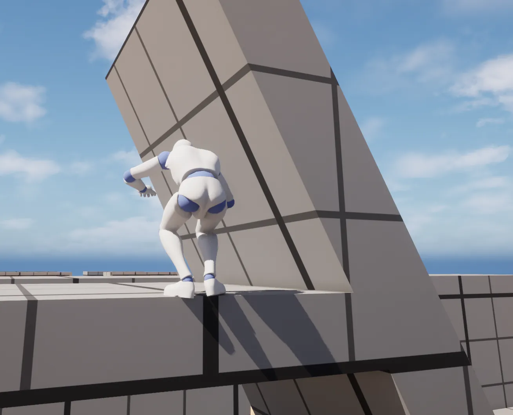
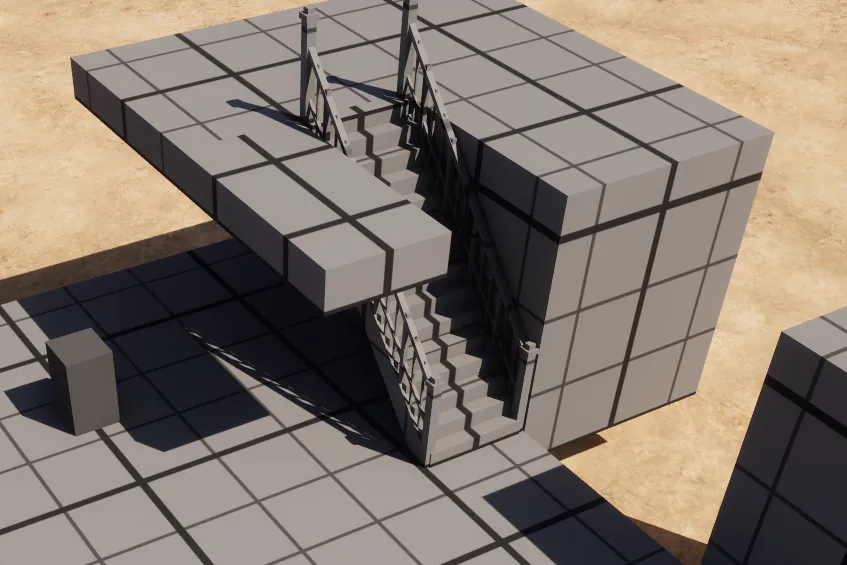
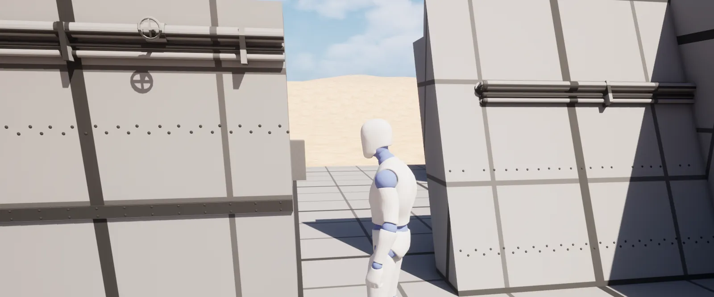
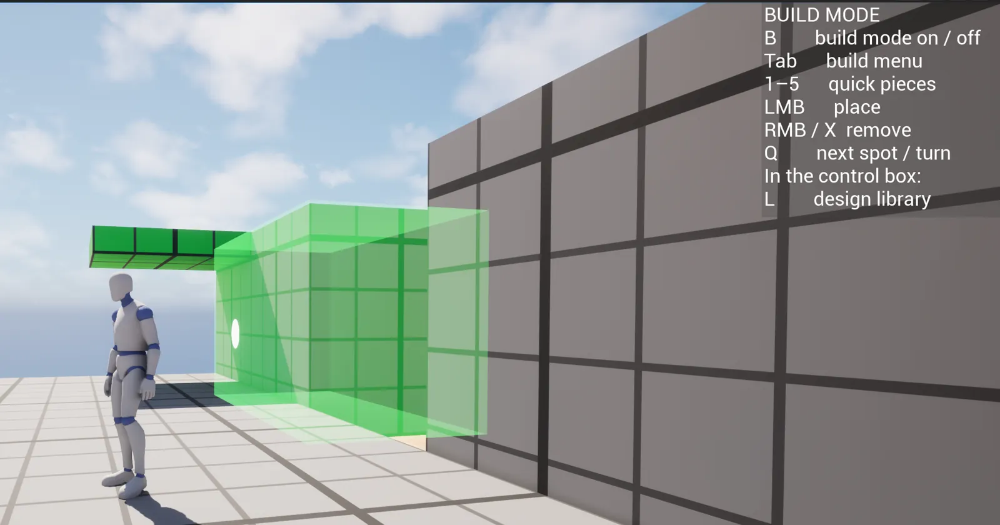
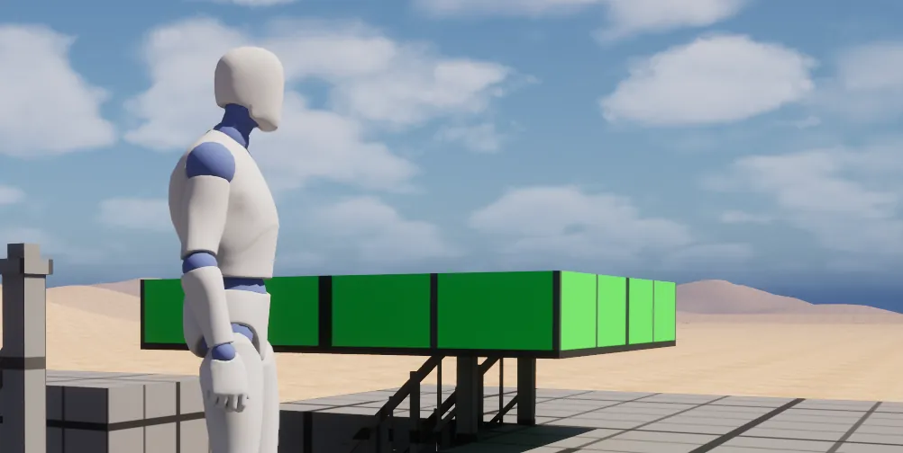

A building system, a tank you can build on and drive, climbing onto it while it moves, the first multiplayer test, saved designs, and a level for the students to try it all.
What we made
- The building grid. Every piece fits a 3 × 3 × 3 m cell and is placed in half-cell steps. 3 m splits evenly into halves, thirds, quarters and sixths, matches the climb heights we tested, and is about one real storey. Decision.
- Build mode. B to build, left mouse to place, right mouse to remove, Q for the next spot or to turn. Floors, straight walls, armour that slopes in half a cell per storey, inner and outer corners, and a test core with a piston under it.
- A build menu (Tab), sorted by category. Pieces are data, so a new piece shows up in the menu without new code.
- Track housings, 6 m and 12 m long, hollow so wheels fit inside, with 1 m of ground clearance.
- A tank you can build on and drive. Walk up, build on it, then get in at a control box (E) and drive. 15 × 15 m of floor on 2 m wheels to start with.
- Two kinds of tank driving side by side: one fully simulated by the physics engine, and one with "fake" physics where springs and turning are set by code. The fake one feels much more like a heavy tank and is very stable.
- A stress test: 1183 pieces on one tank, driving over hills, at about 6 ms per frame. One tank can be very big.
- Climbing onto a moving tank and riding it. Jumping around on the deck keeps the tank's speed.
- Pushing by weight. A light crate slides when you walk into it, a heavy one doesn't, and a moving tank shoves you out of its way.
- First multiplayer test. A second player sees the tank drive smoothly and can climb onto it and ride along.
- The design library. In the control box, L opens a library where you save your tank with a name, author, description and category, and a picture taken from the driving camera. Load it or delete it later.
- Decor: rows of rivets and pipe runs with valves that snap to walls and floors.
- Stairs with banisters, and a half-size floor tile to go next to them.
- Help while building: a dot shows where you aim and a faint box shows the piece you aim at (green or red), the camera moves back and to the right, and a panel lists the keys.
- The Tank Garage, an open level where students can try all of this.
What we found
- A piece that is attached to the tank but not welded becomes its own body, pushes the tank, and the tank flies off.
- Anything climbable must be its own piece, with nothing of the same piece above its edge, or the climb finds the wrong ledge.
- The game character pushed physics objects as if it weighed infinitely much. That is why pushing by weight was needed.
- Compiling a Blueprint while the game is running in the editor can crash the editor. Stop Play first.
Decisions
- The 3 m building grid.
- Play uses only the Mover character.
- One welded body for the whole tank.
- A moving tank shoves you; it doesn't hurt you.
- In multiplayer, the host builds and the pieces are copied to the others.
- Hatches only if they really open and close.
All of them with reasons: Decisions.
New ideas
Saved designs and student tanks as enemies · Getting between floors · How should decor turn? · Skins and faction looks · A Workshop level · Damage you can see and repair
Pictures










